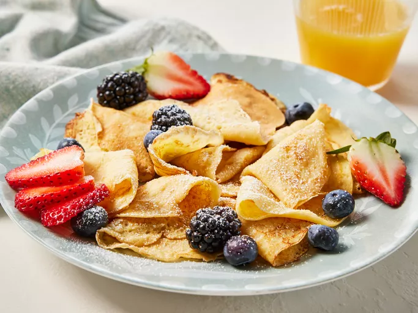

Home
Swedish Pancakes

Description
Swedish pancakes, tasty for everyone. Usually there will be no leftovers, serve with toppings of your preference.
Rasberry jam, lingonberry jam or fruits are some fan favourites in Sweden.
Ingredients
-
3 eggs
-
1.5 cups milk
-
0.75 cup all-purpose flour
-
1 tablespoon white sugar
-
0.5 teaspoon salt
-
1 tablespoon butter, more if needed
Steps
-
Beat the eggs in a bowl until thick and lemon-colored.
-
Stir in the milk.
-
Mix flour, sugar and salt in a separate bowl, then add to the egg-mixture while stirring.
Mix until the batter is smooth.
-
Heat fryingpan medium-high heat, then grease with butter. Add 2-3 tablespoons of batter and spread to make thin pancakes.
Cook until lightly browned, then serve with toppings of your choosing.